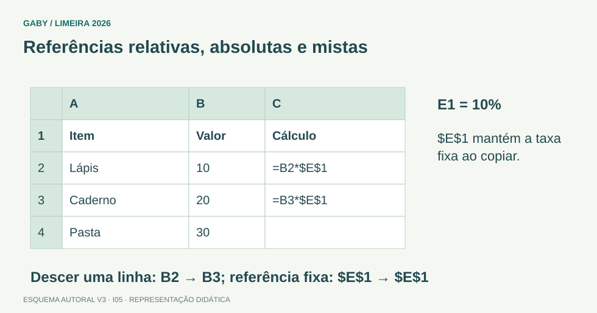

Objetivos do módulo
- Entender célula, linha, coluna, intervalo e pasta de trabalho.
- Dominar referências relativas, absolutas e mistas.
- Prever o efeito de copiar fórmulas.
- Ler e escrever intervalos, linhas e colunas inteiras, referências a outra planilha, referências 3D, referências externas e nomes definidos.
- Usar os atalhos de seleção e de digitação e os comandos de inserir, excluir, limpar, ocultar, mesclar e ajustar linhas e colunas.
- Escolher a opção certa de Colar Especial e distinguir Congelar Painéis, Dividir e Proteger Planilha.
- Saber o que se perde ao salvar a planilha como CSV.
Referências relativas, absolutas e mistas

Descrição em texto do esquema
- A1: Coluna e linha podem variar.
- $A$1: Coluna e linha ficam fixas.
- $A1 / A$1: Fixa somente coluna ou linha.
Oficina visual · aplique o esquema
Ao copiar =B2*$E$1 de C2 para C3, como fica a fórmula?
Atividade autoral complementar da V3. Registre sua resposta; a resolução está no arquivo de gabarito e revisão.
Mapa do conteúdo
- 1. Estrutura
- 2. Tipos de referência
- 3. Fórmula e conteúdo
- 4. Intervalos e operadores
- 5. Erros comuns
- 6. Outras planilhas, outras pastas e nomes definidos
- 7. Selecionar, digitar e formatar a entrada
- 8. Inserir, excluir, limpar, ocultar e ajustar
- 9. Copiar, colar e Colar Especial
- 10. Congelar, dividir e proteger
- 11. Salvar como CSV
1. Estrutura
Referência desta aula: Excel do Microsoft 365 para Windows (desktop), em português do Brasil.
Uma pasta de trabalho pode conter várias planilhas. Cada planilha tem linhas numeradas e colunas identificadas por letras. A interseção forma a célula: A1, C7, AA15. Intervalo A1:A5 indica células contínuas entre A1 e A5.
Pasta de trabalho, planilha e célula
- Pasta de trabalho é o arquivo (por exemplo,
Controle.xlsx). - Planilha é cada folha dentro do arquivo. Cada uma tem uma guia (aba) com seu nome na parte de baixo da janela.
- Célula é o cruzamento de uma coluna com uma linha. É nela que ficam os dados e as fórmulas.
Como ler um endereço
As colunas são identificadas por letras no topo da grade: A, B, C … Z; depois AA, AB, AC … até XFD. As linhas são identificadas por números na borda esquerda: 1, 2, 3 … O endereço da célula traz primeiro a letra da coluna e depois o número da linha: C7 é coluna C, linha 7; AA15 é coluna AA, linha 15. Esse padrão chama-se estilo de referência A1.
A Caixa de Nome, à esquerda da barra de fórmulas, mostra o endereço da célula ativa.
Tamanho da grade
| Item | Limite |
|---|---|
| Linhas por planilha | 1.048.576 |
| Colunas por planilha | 16.384 (a última é a coluna XFD) |
| Formato antigo .xls (Excel 97-2003) | 65.536 linhas e 256 colunas |
Em prova, os números aparecem trocados: 16.384 é a quantidade de colunas, não de linhas; 65.536 e 256 são limites do formato antigo, não das pastas .xlsx atuais.
Nome da planilha
Para renomear, dê dois cliques na guia ou clique nela com o botão direito e escolha Renomear. Regras do nome da planilha:
- não pode ficar em branco nem ter mais de 31 caracteres;
- não pode conter nenhum destes caracteres:
/\?*:[]; - não pode começar nem terminar com apóstrofo;
- hífen, espaço e números são aceitos:
Folha-2026é válido;Folha/2026não é.
O nome da guia e o nome do arquivo são coisas diferentes. Renomear a planilha para Estoque não muda o nome nem a extensão da pasta de trabalho.
2. Tipos de referência
| Referência | Comportamento ao copiar |
|---|---|
| A1 | linha e coluna relativas |
| $A$1 | linha e coluna fixas |
| $A1 | coluna fixa, linha relativa |
| A$1 | coluna relativa, linha fixa |
O que cada tipo faz
- Relativa (
A1): é o padrão. O Excel guarda a posição em relação à célula da fórmula ("duas colunas à esquerda, na mesma linha"). Ao copiar, a referência anda junto. - Absoluta (
$A$1): o cifrão antes da letra trava a coluna; o cifrão antes do número trava a linha. Ao copiar, a referência continua igual. - Mista (
$A1ouA$1): trava só a parte que vem logo depois do cifrão. A outra parte anda.
Regra prática para prever a cópia: conte quantas linhas e quantas colunas a fórmula andou. Some esse deslocamento a cada parte sem cifrão. Não mexa nas partes com cifrão.
Exemplo: uma fórmula está em C3 e é copiada para E5 (duas colunas à direita e duas linhas abaixo).
| Na origem (C3) | No destino (E5) | Por quê |
|---|---|---|
=A1 | =C3 | coluna e linha andam duas posições |
=$A$1 | =$A$1 | nada anda |
=$A1 | =$A3 | só a linha anda |
=A$1 | =C$1 | só a coluna anda |
Copiar só para baixo muda apenas números de linha. Copiar só para o lado muda apenas letras de coluna.
Quando usar cada uma
Use referência absoluta para um valor único que serve a todas as linhas (taxa, cotação, percentual). Exemplo: os preços estão em B4:B6 e o desconto de 10% está em G2. Em C4 digita-se =B4*$G$2. Copiando para baixo:
| Célula | Fórmula após a cópia | Com B4=200, B5=350, B6=80 e G2=0,1 |
|---|---|---|
| C4 | =B4*$G$2 | 20 |
| C5 | =B5*$G$2 | 35 |
| C6 | =B6*$G$2 | 8 |
Sem o cifrão, C5 ficaria =B5*G3. Como G3 está vazia, o resultado seria 0. Neste caso, =B4*G$2 também funcionaria, porque a cópia só desce; $G$2 funciona em qualquer direção.
A tecla F4, com o cursor sobre a referência durante a edição da fórmula, alterna entre os tipos (relativa, absoluta e mistas) sem digitar o cifrão.
Alça de preenchimento
A alça de preenchimento é o pequeno quadrado no canto inferior direito da célula ou do intervalo selecionado. Arrastá-la copia o conteúdo para as células vizinhas.
- Com fórmula: o efeito é o de copiar e colar. Referências relativas se ajustam; as travadas com cifrão não.
- Com dois números selecionados (por exemplo, 5 e 10): o Excel continua a série (15, 20, 25…).
- Depois de arrastar, o botão Opções de Preenchimento Automático aparece ao lado e permite trocar o resultado.
O atalho Ctrl+D copia a célula de cima do intervalo selecionado para as células abaixo, com o mesmo ajuste de referências.
Copiar não é mover
| Ação | Referências dentro da fórmula |
|---|---|
| Copiar (Ctrl+C e Ctrl+V, alça de preenchimento) | as relativas se ajustam ao novo lugar |
| Mover (Recortar com Ctrl+X e colar, ou arrastar a borda da célula) | permanecem exatamente como estavam, seja qual for o tipo |
Exemplo: D2 contém =B2+C2. Se D2 for copiada para F6, a fórmula vira =D6+E6. Se D2 for recortada e colada em F6, a fórmula continua =B2+C2 e o resultado não muda.
3. Fórmula e conteúdo
Fórmulas começam normalmente com =. Se A1=10 e B1=20, =A1+B1 resulta em 30. Ao copiar para a linha seguinte, referências relativas ajustam-se para A2+B2.
4. Intervalos e operadores
Dois-pontos define intervalo contínuo: A1:A10. No Excel em português do Brasil, o ponto e vírgula separa os argumentos das funções; ele não forma intervalo.
Dois-pontos: de um canto ao outro
O intervalo inclui as duas células indicadas e tudo o que há entre elas, formando um retângulo. Para contar as células, multiplique a quantidade de colunas pela de linhas: A1:C3 tem 3 colunas (A, B, C) e 3 linhas (1, 2, 3), portanto 9 células. B5:B9 tem 1 coluna e 5 linhas: 5 células.
Linhas e colunas inteiras
| Referência | O que abrange |
|---|---|
5:5 | toda a linha 5 |
5:10 | todas as linhas de 5 a 10 |
B:B | toda a coluna B |
H:J | todas as colunas de H a J |
B15:E15 | da coluna B à coluna E, só na linha 15 |
Exemplo: =SOMA(C:C) soma todos os números da coluna C; =SOMA(2:2) soma todos os números da linha 2. A fórmula não pode estar dentro da própria linha ou coluna somada, senão cria referência circular.
Ponto e vírgula: juntar áreas separadas
Dentro de uma função, o ponto e vírgula reúne referências que não são vizinhas. =SOMA(A1:A3;C1:C3) soma seis células: três da coluna A e três da coluna C. A coluna B fica de fora.
Compare: =SOMA(A1:C1) soma A1, B1 e C1 (três células); =SOMA(A1;C1) soma só A1 e C1 (duas células). Com A1=4, B1=6 e C1=10, a primeira resulta em 20 e a segunda em 14.
Células comuns a vários intervalos
Algumas questões dão vários intervalos e perguntam quantas células pertencem a todos. Procedimento:
- Nas linhas: pegue o maior número inicial e o menor número final.
- Nas colunas: pegue a letra inicial mais avançada e a letra final menos avançada.
- O que sobra é o intervalo comum. Se o início passar do fim, não há célula comum.
Exemplo: C2:H6, A4:F9 e D3:G5. Linhas: começam em 2, 4 e 3 (maior: 4) e terminam em 6, 9 e 5 (menor: 5). Colunas: começam em C, A e D (mais avançada: D) e terminam em H, F e G (menos avançada: F). Região comum: D4:F5, com 3 colunas e 2 linhas, ou 6 células.
O Excel tem um operador para isso: o espaço entre duas referências (operador de interseção). =SOMA(B7:D7 C6:C8) soma apenas C7, a única célula que está nos dois intervalos.
5. Erros comuns
Referência circular ocorre quando fórmula depende dela mesma, direta ou indiretamente. Erros como #DIV/0! indicam divisão por zero; #N/D pode significar valor não disponível em funções de busca.
6. Outras planilhas, outras pastas e nomes definidos
Referência a outra planilha da mesma pasta
Escreva o nome da planilha, um ponto de exclamação e o endereço: =Estoque!B4 traz o valor de B4 da planilha Estoque. Vale também para intervalos dentro de funções: =SOMA(Vendas!D2:D10).
- O ponto de exclamação separa o nome da planilha do endereço. O nome vem antes.
- Se o nome da planilha tiver espaço ou outro caractere que não seja letra, ele vai entre apóstrofos (aspas simples):
='Notas 2026'!C2. - Aspas duplas, vírgula ou ponto e vírgula entre o nome e o endereço não formam referência.
- Sem o nome da planilha, a fórmula lê a própria planilha em que está:
=SOMA(D2:D10)soma D2:D10 da planilha atual.
Quem monta a fórmula clicando na outra guia e na célula não precisa digitar nada disso: o Excel escreve o nome, os apóstrofos e o ponto de exclamação.
Referência 3D
A referência 3D (tridimensional) aponta para a mesma célula ou o mesmo intervalo em várias planilhas seguidas. A forma é primeira planilha, dois-pontos, última planilha, ponto de exclamação e endereço.
Exemplo: a pasta tem as planilhas Jan, Fev e Mar, nessa ordem, e o total de cada mês está em B2. =SOMA(Jan:Mar!B2) soma o B2 das três. Com 100, 150 e 250, o resultado é 500.
Entram na conta todas as planilhas que estiverem entre as duas extremas, pela ordem das guias. Por isso:
- inserir ou arrastar uma planilha para o meio do trecho faz com que ela passe a ser somada;
- excluir uma planilha do meio, ou arrastá-la para fora do trecho, tira os valores dela do cálculo.
Referência externa
Referência externa (também chamada de link de pasta de trabalho) é a que busca dados em outra pasta de trabalho, isto é, em outro arquivo. O nome do arquivo aparece entre colchetes, antes do nome da planilha:
=SOMA([Orcamento.xlsx]Anual!C10:C25)
Com o arquivo de origem fechado, o Excel mostra também o caminho da pasta, e o conjunto caminho, arquivo e planilha fica entre apóstrofos: =SOMA('C:\Relatorios\[Orcamento.xlsx]Anual'!C10:C25).
| Forma | Para onde aponta |
|---|---|
=B4 | célula da própria planilha |
=Estoque!B4 | outra planilha da mesma pasta |
=SOMA(Jan:Mar!B2) | a mesma célula em várias planilhas seguidas (3D) |
=[Orcamento.xlsx]Anual!C10 | outra pasta de trabalho (externa) |
Nomes definidos
Um nome definido é um apelido dado a uma célula, a um intervalo, a um valor ou a uma fórmula. Ele pode ser usado nas fórmulas no lugar do endereço e deixa a conta mais fácil de ler.
- Selecione a célula ou o intervalo (por exemplo, G2, onde está a alíquota).
- Clique na Caixa de Nome, digite o nome (por exemplo,
Aliquota) e pressione Enter. - Use o nome na fórmula:
=B4*Aliquota. Com B4=300 e G2=0,05, o resultado é 15.
Outro exemplo: se o intervalo D2:D13 se chamar Despesas, =SOMA(Despesas) equivale a =SOMA(D2:D13).
Os nomes da pasta são criados, alterados e excluídos em Fórmulas > Gerenciador de Nomes. O nome não protege os dados, não é macro e não dispensa salvar o arquivo: é só outra forma de escrever a referência.
7. Selecionar, digitar e formatar a entrada
Atalhos de seleção
| Atalho | Efeito |
|---|---|
| Ctrl+Barra de espaços | seleciona a coluna inteira da célula ativa |
| Shift+Barra de espaços | seleciona a linha inteira da célula ativa |
| Ctrl+Shift+Barra de espaços | seleciona a planilha inteira |
| Shift+teclas de direção | estende a seleção uma célula por vez |
| Ctrl+Shift+teclas de direção | estende a seleção até a última célula preenchida da linha ou da coluna |
Para lembrar: Ctrl seleciona a coluna; Shift seleciona a linha; os dois juntos selecionam tudo. Se a célula ativa estiver dentro de um bloco de dados, o primeiro toque em Ctrl+Shift+Barra de espaços seleciona só esse bloco; repetindo o atalho, a seleção chega à planilha inteira. O botão Selecionar Tudo, no canto onde os cabeçalhos de linha e de coluna se encontram, também seleciona toda a planilha.
Com o mouse, clicar no cabeçalho (a letra ou o número) seleciona a coluna ou a linha. Segurar Ctrl permite acrescentar à seleção células, linhas ou colunas que não são vizinhas.
Atalhos de digitação
| Tecla | Efeito |
|---|---|
| Enter | confirma a entrada |
| Esc | cancela a entrada que está sendo digitada |
| Alt+Enter | insere uma quebra de linha dentro da mesma célula; o texto continua na linha de baixo sem sair da célula |
| Ctrl+Enter | confirma a entrada em todas as células selecionadas de uma vez |
| F2 | edita a célula ativa |
| Delete | apaga o conteúdo das células selecionadas e mantém a formatação |
Exemplo de Ctrl+Enter: selecione B2:B6, digite Pendente e pressione Ctrl+Enter. As cinco células recebem o texto. Com Enter, só a célula ativa receberia.
Códigos com zeros à esquerda
O Excel trata como número o que parece número, e número não guarda zeros à esquerda: quem digita 00457 fica com 457. Matrícula, CEP e código de produto são identificadores, não quantidades. Para preservar os zeros iniciais:
- antes de digitar, selecione as células, pressione Ctrl+1, abra a guia Número e escolha a categoria Texto; ou
- digite um apóstrofo antes do código:
'00457.
Aplicar o formato Texto depois da digitação não traz de volta os zeros já descartados.
Formato de número muda a aparência, não o valor
A célula guarda um valor e mostra esse valor conforme o formato aplicado. Os cálculos usam o valor armazenado, não o que aparece na tela.
- Casas decimais: os botões Aumentar Casas Decimais e Diminuir Casas Decimais (Página Inicial, grupo Número) e a caixa Formatar Células (Ctrl+1), guia Número, mudam quantas casas são exibidas. Se a célula contém 7,256 e mostra duas casas, aparece 7,26, mas o valor armazenado continua 7,256. O ajuste vale para números digitados e para resultados de fórmulas e pode ser refeito a qualquer momento.
- Porcentagem: o formato exibe o valor multiplicado por 100, com o símbolo %. Uma célula com 0,4 passa a mostrar 40%, e o valor continua 0,4. Uma célula com 40 passaria a mostrar 4000%. Por isso,
=500*H1, com H1 exibindo 40%, resulta em 200.
Planilhas agrupadas
Clicar em várias guias com Ctrl pressionado (ou na primeira e, com Shift, na última) agrupa as planilhas. A palavra Grupo aparece ao lado do nome do arquivo, no título da janela. Enquanto as planilhas estão agrupadas, o que for digitado ou formatado em uma delas é repetido na mesma célula de todas as outras do grupo.
É útil para montar cabeçalhos iguais em várias abas. É perigoso quando esquecido: um dado digitado para uma única planilha sobrescreve a mesma célula nas demais. Antes de voltar a editar uma só, desagrupe: clique com o botão direito em uma guia do grupo e escolha Desagrupar Planilhas, ou clique em uma guia que esteja fora do grupo.
8. Inserir, excluir, limpar, ocultar e ajustar
Inserir linhas, colunas e células
- Linha ou coluna: clique com o botão direito no cabeçalho e escolha Inserir, ou use Página Inicial > Inserir. A nova linha entra acima da selecionada; a nova coluna entra à esquerda.
- Várias de uma vez: selecione a mesma quantidade de linhas (ou colunas) que deseja criar e escolha Inserir. Selecionando as linhas 4, 5 e 6 e inserindo, surgem três linhas novas, e a antiga linha 4 passa a ser a linha 7.
- Só algumas células: botão direito > Inserir (ou Ctrl+Shift+sinal de adição). A caixa Inserir pergunta o deslocamento: as células existentes vão para a direita ou para baixo. Apenas aquele trecho da linha ou da coluna se move.
A linha ou coluna inserida costuma receber a formatação da vizinha. O botão Opções de Inserção, que aparece logo depois da operação, permite escolher de qual lado copiar a formatação ou não copiar nenhuma.
Limpar não é excluir
| Comando | O que acontece | As vizinhas se movem? |
|---|---|---|
| Delete ou Página Inicial > Limpar > Limpar Conteúdo | apaga dados e fórmulas; a célula continua no lugar, com a formatação | não |
| Limpar > Limpar Formatos | remove só a formatação; o conteúdo fica | não |
| Limpar > Limpar Tudo | remove conteúdo, formatos e comentários | não |
| Página Inicial > Excluir (ou Ctrl+sinal de subtração) | remove a própria célula, linha ou coluna da grade | sim: desloca as vizinhas para a esquerda ou para cima |
| Botão direito na guia > Excluir | remove a planilha inteira da pasta de trabalho | não se aplica |
Exemplo: A1=10, A2=20, A3=30. Limpar o conteúdo de A2 deixa A2 vazia e A3 continua com 30. Excluir A2 com deslocamento para cima faz o 30 subir para A2.
Apagar todos os dados de uma planilha não remove a guia; para isso é preciso excluir a planilha.
Ocultar e reexibir
Selecione as linhas ou colunas, clique com o botão direito e escolha Ocultar (atalhos: Ctrl+9 oculta linhas; Ctrl+0 oculta colunas). Ocultar não exclui: os dados continuam na planilha, apenas não aparecem na tela nem na impressão. O sinal é o salto nos cabeçalhos (por exemplo, de C direto para F) e uma linha dupla entre eles.
Para trazer de volta, selecione as linhas ou colunas dos dois lados da parte oculta, clique com o botão direito e escolha Reexibir.
Largura da coluna e altura da linha
Texto que não cabe na coluna aparece cortado quando a célula ao lado está ocupada. O dado está inteiro; falta espaço para mostrá-lo. Soluções:
- arrastar a divisa direita do cabeçalho da coluna, ou dar dois cliques nela para ajustar ao conteúdo;
- Página Inicial > Formatar > Largura da Coluna (valor exato) ou AutoAjuste da Largura da Coluna;
- para linhas: Formatar > Altura da Linha ou AutoAjuste da Altura da Linha;
- manter a largura e fazer o texto ocupar mais de uma linha na célula: quebra de texto automática ou Alt+Enter.
A largura da coluna é medida em caracteres (de 0 a 255) e a altura da linha em pontos (de 0 a 409). Largura ou altura 0 deixa a coluna ou a linha oculta.
Mesclar células
Mesclar junta duas ou mais células vizinhas em uma só, maior. O comando fica em Página Inicial > Mesclar e Centralizar; a seta ao lado traz as variações, inclusive a que desfaz a mesclagem.
Exemplo: A1 contém Relatório e B1 contém 2026. Mescladas, a célula resultante mostra apenas Relatório. Para unir os dois textos, use antes uma fórmula como =A1&" "&B1.
Separar o conteúdo: Texto para Colunas
No Excel não existe dividir uma célula comum em duas, como se faz em tabela do Word: a célula é a menor unidade da grade. Só se desfaz a mesclagem de células que foram mescladas. O que se pode fazer é distribuir o conteúdo de uma célula pelas células vizinhas.
- Selecione a célula ou a coluna com o texto.
- Vá em Dados > Texto para Colunas.
- No assistente, escolha Delimitado e avance.
- Marque o delimitador, isto é, o caractere que separa os campos (vírgula, ponto e vírgula, espaço, tabulação ou outro).
- Confira o Destino e clique em Concluir.
Exemplo: A2 contém Caneta,Azul,12. Com a vírgula como delimitador, A2 fica com Caneta, B2 com Azul e C2 com 12.
Os campos separados ocupam as células à direita e substituem o que estiver nelas. Antes de usar o comando, confira se há colunas vazias suficientes ao lado.
9. Copiar, colar e Colar Especial
Ctrl+C copia, Ctrl+X recorta e Ctrl+V cola tudo: conteúdo, fórmulas e formatação. O que for colado substitui o que havia no destino. Para colar só uma parte, use a seta do botão Colar (Página Inicial) ou a caixa Colar Especial (Ctrl+Alt+V).
| Opção | O que leva para o destino |
|---|---|
| Fórmulas | só as fórmulas, sem a formatação e sem os comentários da origem |
| Valores | só os resultados; no destino ficam números e textos fixos, sem fórmula |
| Formatação (Formatos, na caixa Colar Especial) | só a aparência: cor, fonte, borda, formato de número; o conteúdo do destino não muda |
| Valores e formatação de origem | os resultados e a aparência, sem as fórmulas |
| Manter larguras da coluna original / Larguras de coluna | a largura das colunas de origem |
| Colar vínculo | uma referência às células de origem; se a origem mudar, o destino acompanha |
| Imagem | uma figura estática das células copiadas |
| Imagem vinculada | uma figura que se atualiza quando as células de origem mudam |
| Transpor | os dados com a orientação trocada: o que estava em linha vai para coluna e vice-versa |
Como escolher
- Enviar só os números já calculados, sem as contas: Valores.
- Repetir o cálculo em outro lugar sem levar cores e bordas: Fórmulas.
- Deixar uma célula com a aparência de outra sem trocar o que ela contém: Formatação.
- Fazer o destino acompanhar a origem: Colar vínculo (nas células) ou Imagem vinculada (como figura).
Exemplo: C2 contém =A2*B2 e mostra 150. Colando C2 em F2 com Valores, F2 passa a conter o número 150 e deixa de depender de A2 e B2. Colando com Fórmulas, F2 recebe =D2*E2, porque a referência relativa se ajusta.
Transpor
Transpor troca linhas por colunas. A primeira linha da origem vira a primeira coluna do destino, e assim por diante. A quantidade de células é a mesma; o que muda é a forma do bloco: um intervalo de 4 linhas por 2 colunas (8 células) vira um bloco de 2 linhas por 4 colunas (8 células).
Exemplo: A1:A3 contém Seg, Ter, Qua, um embaixo do outro. Copiando e colando em C1 com Transpor, os dias ficam lado a lado em C1, D1 e E1.
10. Congelar, dividir e proteger
São três recursos diferentes. Os dois primeiros mudam só o que se vê na tela; o terceiro controla o que pode ser alterado.
Congelar Painéis
Mantém linhas e colunas sempre visíveis enquanto o resto da planilha rola. Serve para não perder de vista os títulos. Caminho: Exibir > Congelar Painéis > Congelar Painéis.
Regra: ficam fixas as linhas acima e as colunas à esquerda da célula selecionada no momento do comando.
| Célula selecionada | O que fica fixo |
|---|---|
| B2 | linha 1 e coluna A |
| D4 | linhas 1 a 3 e colunas A a C |
| A3 | linhas 1 e 2 (não há coluna à esquerda de A) |
| Coluna C inteira | colunas A e B |
A célula selecionada não é congelada: ela é a primeira da parte que rola. O mesmo botão traz opções prontas para fixar só a linha superior ou só a primeira coluna.
Para desfazer: Exibir > Congelar Painéis > Descongelar Painéis. Nenhum dado é apagado ou alterado.
Dividir
Exibir > Dividir reparte a janela em painéis da mesma planilha. Cada painel tem rolagem própria, o que permite ver lado a lado partes distantes (por exemplo, a linha 5 e a linha 900). A divisão é feita acima e à esquerda da célula selecionada; selecionando uma linha inteira, a divisão fica acima dela. Clicar em Dividir de novo remove os painéis.
Proteger Planilha
Revisão > Proteger Planilha impede a alteração das células bloqueadas, com senha opcional. Pontos cobrados:
- Toda célula já vem marcada como bloqueada, mas a marca só produz efeito depois que a planilha é protegida.
- Para deixar algumas células livres, desbloqueie-as antes de proteger: selecione-as, pressione Ctrl+1, abra a guia Proteção e desmarque a caixa de bloqueio.
- Na planilha protegida, por padrão, a célula bloqueada pode ser selecionada, mas não pode ser editada. Selecionar não é o mesmo que ter permissão para alterar.
- Para voltar a editar tudo: Revisão > Desproteger Planilha (com a senha, se houver).
| Recurso | Onde fica | Para que serve | Impede a edição? |
|---|---|---|---|
| Congelar Painéis | Exibir | manter títulos visíveis durante a rolagem | não |
| Dividir | Exibir | rolar duas ou quatro áreas da mesma planilha | não |
| Proteger Planilha | Revisão | impedir a alteração das células bloqueadas | sim |
11. Salvar como CSV
CSV (valores separados por vírgulas) é um arquivo de texto simples: cada linha da planilha vira uma linha de texto, e as colunas são separadas por um caractere delimitador. Não há onde guardar cor, fonte, fórmula ou gráfico. Em Arquivo > Salvar como, o tipo aparece como CSV (separado por vírgulas) (*.csv).
| Elemento da planilha | No arquivo .csv |
|---|---|
| Textos e números | mantidos, do jeito que aparecem nas células |
| Fórmulas | perdidas: fica gravado só o resultado que a célula mostrava |
| Formatação (cor de fundo, negrito, bordas, largura de coluna) | perdida |
| Mesclagem de células | perdida |
| Gráficos, imagens e outros objetos | perdidos |
| Outras planilhas da pasta | não são salvas: o CSV guarda só a planilha ativa |
Exemplo: C2 contém =A2+B2, mostra 90 e está com fundo amarelo. No .csv fica gravado apenas 90. Ao abrir esse arquivo no Excel, C2 traz o número 90, sem fórmula e sem cor. Reabrir no Excel não recupera o que não foi gravado.
Para manter fórmulas, formatação e todas as planilhas, o arquivo de trabalho deve ser salvo como Pasta de Trabalho do Excel (.xlsx). O CSV serve para levar dados a outros sistemas.
Exemplos resolvidos passo a passo
Exemplo 1
Situação: Em C1, fórmula =A1*$B$1. Ao copiar para C2, qual fica?
Exemplo 2
Situação: O que significa B2:D4?
Exemplo 3
Situação: Uma tabela de multiplicação tem os números 1 a 5 em B1:F1 e em A2:A6. Em B2 foi digitado =$A2*B$1. A fórmula é copiada para D4. Como fica e qual é o resultado?
Exemplo 4
Situação: A pasta tem as planilhas Resumo e Folha de Pagamento. Na planilha Resumo, deseja-se o maior valor do intervalo E2:E20 da outra planilha. Qual é a fórmula?
Exemplo 5
Situação: Uma lista tem os títulos na linha 1 e os nomes na coluna A. Qual célula selecionar antes de usar Congelar Painéis para manter os dois visíveis? Depois disso, a linha 1 fica protegida contra alterações?
Exemplo 6
Situação: Uma planilha tem A1:C1 mescladas com o título em negrito, e D5 contém =SOMA(D2:D4), mostrando 720. O arquivo é salvo como CSV e depois aberto no Excel. O que se encontra?
Pegadinhas e erros frequentes
- Confundir planilha com pasta de trabalho.
- Esquecer $ ao usar taxa fixa.
- Achar que $ representa moeda dentro da referência.
- Aplicar a regra da cópia a uma fórmula recortada: ao mover, as referências permanecem as mesmas.
- Trocar os limites: 1.048.576 é o número de linhas e 16.384 o de colunas; 31 caracteres é o limite do nome da planilha.
- Ler 5:5 como "célula 5" ou B:B como "célula B1": são a linha 5 inteira e a coluna B inteira.
- Inverter a ordem na referência a outra planilha: o nome vem antes do ponto de exclamação; apóstrofos só envolvem o nome da planilha.
- Trocar Ctrl+Barra de espaços (coluna) por Shift+Barra de espaços (linha), ou Alt+Enter (nova linha na célula) por Ctrl+Enter (preencher a seleção).
- Achar que congelar painéis protege as células, ou que a célula selecionada também fica fixa.
- Achar que mesclar junta os textos: só fica o conteúdo da célula superior esquerda.
- Achar que o formato Porcentagem ou a redução de casas decimais altera o valor usado nos cálculos.
- Confundir limpar (a célula fica no lugar) com excluir (as vizinhas se deslocam).
- Esquecer planilhas agrupadas e digitar em todas ao mesmo tempo.
- Achar que o CSV guarda fórmulas, cores ou mesclagem.
Resumo de prova
- Célula = coluna+linha.
- A1 relativa; $A$1 absoluta.
- Referências mistas fixam só linha ou coluna.
- Fórmula começa com =.
- Intervalo contínuo usa :.
- Copiar ajusta as referências relativas; recortar e colar (mover) não ajusta nenhuma.
- Grade: 1.048.576 linhas por 16.384 colunas (A até XFD). Nome da planilha: até 31 caracteres, sem / \ ? * : [ ].
- 5:5 é a linha 5 inteira; B:B é a coluna B inteira; ponto e vírgula junta áreas separadas: =SOMA(A1:A3;C1:C3).
- Outra planilha: Estoque!B4 ou 'Notas 2026'!C2. Referência 3D: =SOMA(Jan:Mar!B2). Referência externa: [Arquivo.xlsx]Planilha!A1, em outra pasta de trabalho.
- Nome definido substitui o endereço na fórmula: =B4*Aliquota. Gerência em Fórmulas > Gerenciador de Nomes.
- Ctrl+Barra de espaços: coluna. Shift+Barra de espaços: linha. Ctrl+Shift+Barra de espaços: planilha inteira.
- Alt+Enter: quebra de linha na célula. Ctrl+Enter: mesma entrada em todas as células selecionadas. F4: alterna o tipo de referência.
- Formato Texto (ou apóstrofo) preserva zeros à esquerda. Formato de número e casas decimais mudam a exibição, não o valor armazenado.
- Inserir: linha nova acima, coluna nova à esquerda; para várias, selecionar a mesma quantidade. Limpar esvazia; Excluir desloca as vizinhas.
- Mesclar mantém só a célula superior esquerda. Texto para Colunas separa pelo delimitador e sobrescreve as células à direita.
- Colar Especial (Ctrl+Alt+V): Fórmulas, Valores, Formatação, Colar vínculo, Imagem vinculada; Transpor troca linhas por colunas.
- Congelar Painéis (Exibir) fixa o que está acima e à esquerda da célula selecionada; Dividir cria painéis roláveis; Proteger Planilha (Revisão) impede editar células bloqueadas.
- CSV guarda só textos e valores da planilha ativa: perde fórmulas, formatação e mesclagem.
Exercícios do módulo
Resolva sem consultar o arquivo de gabarito. As questões são autorais e construídas para treinar os conceitos do edital.
- linha C coluna5
- arquivo C5
- slide5
- coluna C linha5
- mista de linha
- texto
- absoluta
- relativa
- nenhuma
- linha 1
- coluna A
- ambas
- coluna A
- linha1
- ambas
- nenhuma
- uma única célula
- arquivo
- gráfico
- intervalo
- somente gráficos
- nenhuma fórmula
- várias planilhas
- somente uma célula
- & apenas
- =
- #
- @ apenas
- =A2
- =A1 sempre
- =B1
- =$A$1
- arquivo corrompido necessariamente
- impressão
- senha
- divisão por zero
- somar
- subtrair
- fixar referência
- formatar moeda necessariamente
Quando terminar, abra Informática 05 - Excel - Células, Linhas, Colunas e Referências - Gabarito e Revisão.
Checklist de domínio
- ☐ Entender célula, linha, coluna, intervalo e pasta de trabalho.
- ☐ Dominar referências relativas, absolutas e mistas.
- ☐ Prever o efeito de copiar fórmulas.
- ☐ Dizer o resultado de copiar e de mover uma fórmula com referências relativas, absolutas e mistas.
- ☐ Citar os limites da grade e as regras do nome da planilha.
- ☐ Contar células de um intervalo, achar a região comum a vários intervalos e ler 5:5 e B:B.
- ☐ Escrever referência a outra planilha (com e sem apóstrofos), referência 3D e referência externa, e usar um nome definido.
- ☐ Usar os atalhos de seleção (coluna, linha, planilha inteira) e de digitação (Alt+Enter, Ctrl+Enter).
- ☐ Explicar por que o formato Texto preserva zeros e por que o formato de número não altera o valor.
- ☐ Diferenciar inserir, excluir, limpar e ocultar; ajustar largura da coluna e altura da linha; prever o efeito de mesclar e de Texto para Colunas.
- ☐ Escolher a opção de Colar Especial adequada e prever o resultado de Transpor.
- ☐ Diferenciar Congelar Painéis, Dividir e Proteger Planilha, e lembrar de desagrupar planilhas agrupadas.
- ☐ Listar o que se perde ao salvar como CSV.
Meta do módulo: 80% ou mais nas questões, sem depender de consulta.
Referências e conteúdos auxiliares
- Microsoft — Criar ou alterar uma referência de célulaReferências usadas em fórmulas e intervalos de células.
- Microsoft — Auxílio e aprendizado do ExcelCentral de ajuda para tabelas, filtros, classificação, gráficos e fórmulas.
- Microsoft — Visão geral de fórmulas no ExcelEstilo A1 (colunas A a XFD, linhas 1 a 1.048.576), 5:5 e H:H, referência a outra planilha com ! e apóstrofos, referências relativas, absolutas e mistas, referência 3D. Conferido em 17/11/2026.
- Microsoft — Mover ou copiar uma fórmulaMover não altera as referências; copiar ajusta as relativas; tabela de cópia duas células abaixo e à direita. Conferido em 17/11/2026.
- Microsoft — Alternar entre referências relativas, absolutas e mistasDefinições dos três tipos e uso de F4. Conferido em 17/11/2026.
- Microsoft — Operadores de cálculo e precedência no ExcelOperadores de referência: intervalo (dois-pontos), união e interseção (espaço). Conferido em 17/11/2026.
- Microsoft — Especificações e limites do ExcelPlanilha com 1.048.576 linhas por 16.384 colunas; largura máxima de coluna 255 caracteres; altura máxima de linha 409 pontos. Conferido em 17/11/2026.
- Microsoft — Worksheet compatibility issues (em inglês)Limite de 65.536 linhas por 256 colunas do formato Excel 97-2003 (.xls). Conferido em 17/11/2026.
- Microsoft — Renomear uma planilhaFormas de renomear, limite de 31 caracteres e caracteres não permitidos no nome. Conferido em 17/11/2026.
- Microsoft — Criar uma referência externa (link) para um intervalo de células em outra pasta de trabalhoSintaxe com o nome do arquivo entre colchetes, com a origem aberta e fechada. Conferido em 17/11/2026.
- Microsoft — Definir e usar nomes em fórmulasCriação de nome pela Caixa de Nome e Gerenciador de Nomes. Conferido em 17/11/2026.
- Microsoft — Atalhos de teclado no ExcelCtrl+Barra de espaços, Shift+Barra de espaços, Ctrl+Shift+Barra de espaços, Alt+Enter, Ctrl+Enter, F2, F4, Delete, Ctrl+D, Ctrl+9, Ctrl+0, Ctrl+Alt+V, Ctrl+Shift+sinal de adição e Ctrl+sinal de subtração. Conferido em 17/11/2026.
- Microsoft — Preencher dados automaticamente nas células da planilhaAlça de preenchimento, séries e botão Opções de Preenchimento Automático. Conferido em 17/11/2026.
- Microsoft — Manter zeros à esquerda e números grandesFormato Texto antes da digitação e apóstrofo para preservar zeros à esquerda. Conferido em 17/11/2026.
- Microsoft — Parar de arredondar númerosDiferença entre o valor exibido e o valor armazenado; casas decimais. Conferido em 17/11/2026.
- Microsoft — Agrupar planilhasAgrupar com Ctrl ou Shift, efeito da edição em grupo e Desagrupar Planilhas. Conferido em 17/11/2026.
- Microsoft — Inserir ou excluir linhas e colunasInserção de várias linhas, células com deslocamento, exclusão com deslocamento e opções de inserção. Conferido em 17/11/2026.
- Microsoft — Limpar células de conteúdo ou formatosLimpar Tudo, Limpar Formatos, Limpar Conteúdo e tecla Delete. Conferido em 17/11/2026.
- Microsoft — Ocultar ou mostrar linhas ou colunasOcultar, Reexibir e a linha dupla que indica parte oculta. Conferido em 17/11/2026.
- Microsoft — Alterar a largura da coluna e a altura da linhaLargura da Coluna, Altura da Linha, AutoAjuste e limites de 0 a 255 e de 0 a 409. Conferido em 17/11/2026.
- Microsoft — Mesclar e desfazer mesclagem de célulasSó o conteúdo da célula superior esquerda é mantido; não é possível dividir célula não mesclada. Conferido em 17/11/2026.
- Microsoft — Dividir texto em diferentes colunas com o Assistente para Conversão de Texto em ColunasPassos de Dados > Texto para Colunas, opção Delimitado, delimitadores e Destino. Conferido em 17/11/2026.
- Microsoft — Dividir uma célula no ExcelO conteúdo dividido substitui o da célula à direita; o Excel não divide uma célula como o Word. Conferido em 17/11/2026.
- Microsoft — Opções de colagemNomes e efeitos das opções do menu Colar e da caixa Colar Especial, inclusive Transpor, Colar vínculo e Imagem vinculada. Conferido em 17/11/2026.
- Microsoft — Congelar painéis para bloquear linhas e colunasExibir > Congelar Painéis, célula a selecionar e Descongelar Painéis. Conferido em 17/11/2026.
- Microsoft — Dividir painéis para bloquear linhas ou colunas em áreas separadas da planilhaExibir > Dividir, posição da divisão e como removê-la. Conferido em 17/11/2026.
- Microsoft — Bloquear ou desbloquear áreas específicas de uma planilha protegidaCélulas bloqueadas por padrão, efeito só com Revisão > Proteger Planilha, seleção de células bloqueadas e Desproteger Planilha. Conferido em 17/11/2026.
- Microsoft — Formatação e recursos do Excel que não são transferidos para outros formatos de arquivoCSV salva só texto e valores exibidos da planilha ativa; formatação, gráficos e objetos são perdidos. Conferido em 17/11/2026.
Referências externas de apoio consultadas para a V3 em 27/09/2026. A origem das questões é o material autoral do projeto; estes links não indicam que uma instituição publicou ou validou os exercícios. As páginas externas precisam de internet. Em informática, confira a versão do programa; em legislação, observe o recorte e as regras de atualização do edital.